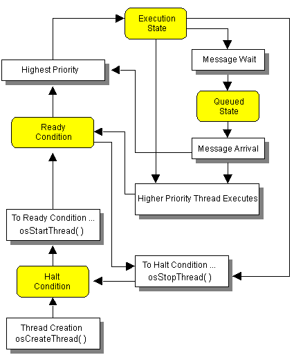

2.1.3 Threads
A thread is a single control unit of a CPU process. Under the N64 operating system, the code for all threads exists and is processed in main memory (RDRAM). A thread is like a small
sub-program.
N64 game programs use of threads, messages, events, and tasks. The priority of the thread determines thread execution order.
Kinds of Threads
There are several kinds of threads. Each programmer is free to program each thread as is appropriate for a given game application. However, in most cases, a programmer creates the following kinds of threads:
- Initializing thread
- Game thread
- Device thread
- Scheduler thread
- Graphics thread
- Audio thread
- Idle thread
State of the Thread
At any specific moment in time, a thread is in one of the following states:
- Execution state - Only one thread in a game program can be executing at a given time. Therefore, among those threads in the "ready condition" state, the thread with the highest priority is executed.
- Ready condition - A thread is in the ready condition if it is ready to begin executing as soon as it becomes the highest priority thread in the ready condition. A thread can move into the ready condition when its processing is interrupted by a higher priority thread or when it has been waiting (in the waiting condition) for resources and those resources become available.
- Queued state - A thread is in the queued state when it is waiting for a message or event. Upon receiving the message (or when the event occurs), the thread changes state to the execution state or the ready condition depending on its priority.
- Halt condition - A thread in the halt condition has no standing in the execution schedule. That is, a halted thread doesn't automatically become a candidate for execution unless the program specifically places it in the ready condition. For example, a newly created thread is automatically placed in the halt condition.
Use the osStopThread function to place a thread in halt condition, and use the osStartThread function to place a thread in the ready condition.
The following illustration shows the relationships between the thread conditions:

Keep the following facts in mind in view of the fact that all threads share RDRAM:
- If every thread accepts data from the same address, each thread has the same data content.
- Switching from thread to thread is a very fast process.
- You must strictly control addresses to prevent deadly consequences to other threads.
- A lower-priority thread is always suspended by a higher priority thread during execution. Therefore, each thread must have a stack and its own control table so that it can be suspended at any time.
If you raise the optimization level by adding the -O option when you compile your code, it is possible that each thread variable won't be updated. Therefore, you have to use the volatile keyword when using a variable that is common to two threads (threads A and B for example).
Idle Thread Is Necessary
The idle thread is the lowest priority thread. This thread is executed when the CPU doesn't have any other threads to process. If this thread didn't exist, the CPU couldn't do anything. So even an idle thread has important role. Make sure your game program creates an idle thread.
Nintendo® Confidential
Copyright © 1999
Nintendo of America Inc. All Rights Reserved
Nintendo and N64 are registered trademarks of Nintendo
Last Updated March, 1999